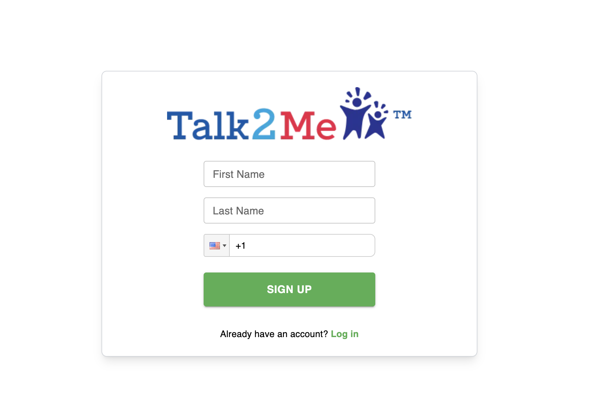
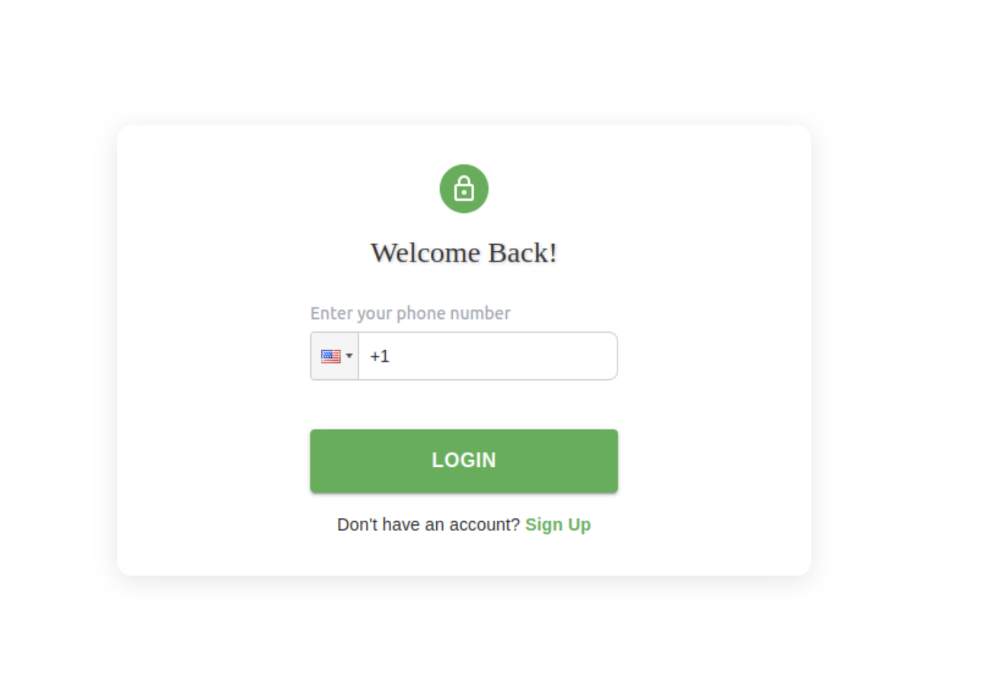
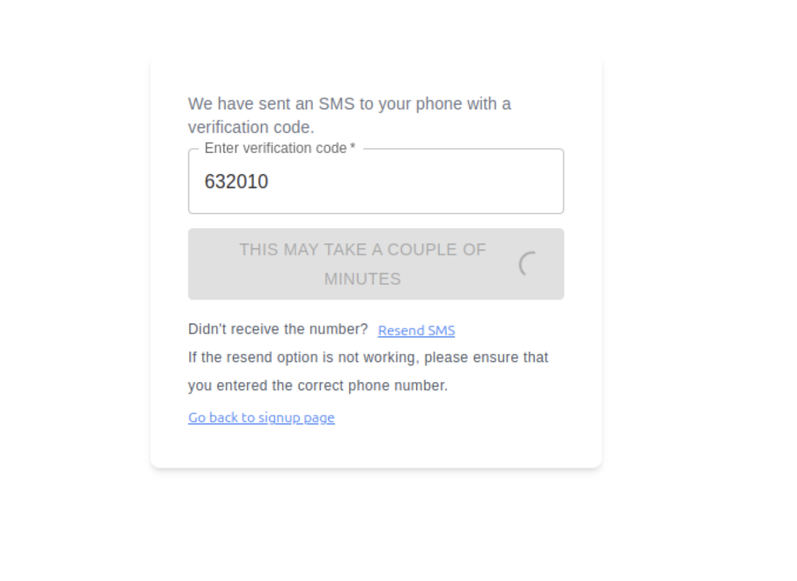
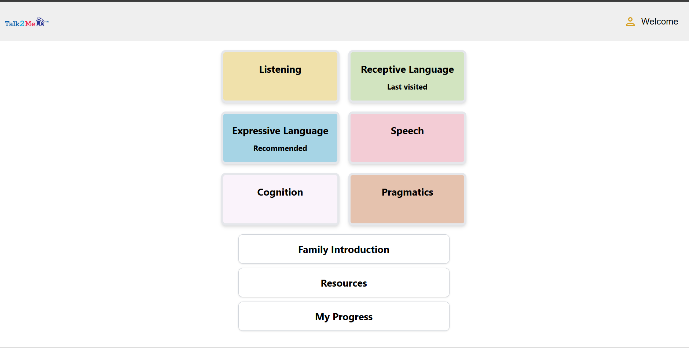
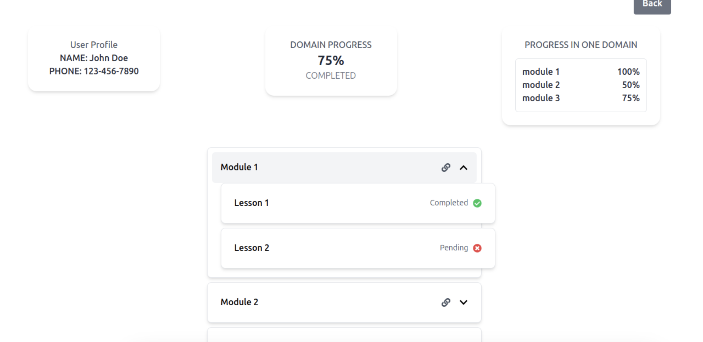
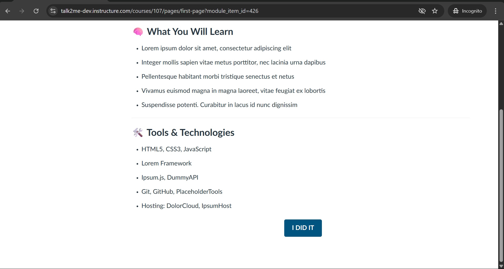
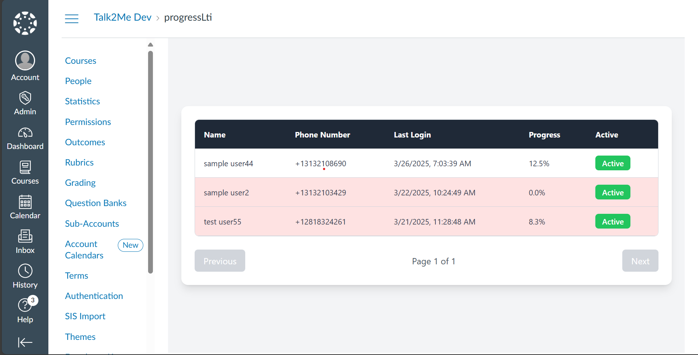

<div id="ajax-page" class="ajax-page-content">
  <div class="ajax-page-wrapper">
    <div class="ajax-page-nav">
      <div class="nav-item ajax-page-prev-next">
        <a class="ajax-page-load" href="portfolio-project-3.html"><i class="lnr lnr-chevron-left"></i></a>
        <a class="ajax-page-load" href="portfolio-project-1.html"><i class="lnr lnr-chevron-right"></i></a>
      </div>
      <div class="nav-item ajax-page-close-button">
        <a id="ajax-page-close-button" href="#"><i class="lnr lnr-cross"></i></a>
      </div>
    </div>

    <div class="ajax-page-title">
      <h1>Talk2Me App</h1>
    </div>

    <div class="row">
      <div class="col-sm-8 col-md-8 portfolio-block">
        <div class="owl-carousel portfolio-page-carousel">
          <div class="item">
            
          </div>
          <div class="item">
            
          </div>
          <div class="item">
            
          </div>
          <div class="item">
            
          </div>
          <div class="item">
            
          </div>
          <div class="item">
            
          </div>
          <div class="item">
            
          </div>
        </div>

        <!-- Project Details Section Start -->
        <div class="full-detail-section mt-5">
          <div class="block-title mb-4">
            <h2 class="text-center">Talk2Me — Accessible Learning Platform</h2>
          </div>

          <h4>Project Summary:</h4>
          <p>
            Built a responsive web/mobile learning platform that equips parents, caregivers, teachers, and coaches with evidence-based strategies
            to develop listening and spoken-language skills in young children with hearing loss. The experience combines passwordless SMS onboarding,
            a customized Canvas LMS delivery layer, and real-time progress analytics with coach/admin oversight.
            <strong>Tech:</strong> Canvas LMS (LTI, REST API), AWS (Amplify, S3, CloudFront, API Gateway, Lambda, RDS/DynamoDB, Kinesis, QuickSight),
            React (Next.js), React Native (Expo), Twilio Verify, Docker.
          </p>

          <h4>Core Product Capabilities:</h4>
          <ul class="list-group list-group-flush mb-4">
            <li class="list-group-item">
              <strong>Friction-Free Onboarding:</strong> Passwordless sign-up/sign-in using one-time SMS codes (OTP) — no passwords to manage.
            </li>
            <li class="list-group-item">
              <strong>Personalized Learning Path:</strong> Intake questionnaire + coach override to place learners in the right module across six learning domains.
            </li>
            <li class="list-group-item">
              <strong>Transparent Progress Tracking:</strong> Domain → lesson dashboards with explicit completion (“I Did It”) and clear next-step guidance.
            </li>
            <li class="list-group-item">
              <strong>Coach & Admin Oversight:</strong> Multi-tenant views for coach caseload monitoring, help-desk admin metrics, and inactivity flags to prevent learner drop-off.
            </li>
          </ul>

          <h4>My Role:</h4>
          <ul class="list-group list-group-flush mb-4">
            <li class="list-group-item">
              <strong>Product & UX:</strong> Produced technical documentation, wireframes, and acceptance-ready requirements; aligned stakeholders across phased delivery.
            </li>
            <li class="list-group-item">
              <strong>Architecture & DevOps:</strong> Designed the end-to-end architecture and provisioned AWS infrastructure; established CI/CD patterns per environment.
            </li>
            <li class="list-group-item">
              <strong>Canvas LMS Integration:</strong> Extended Canvas via REST API + LTI to support embedded experiences, single-lesson views, and custom progress dashboards.
            </li>
            <li class="list-group-item">
              <strong>Feature Development & QA:</strong> Built React components (Tile View, Progress View), integrated Twilio Verify SMS auth, and led bug triage through release cycles.
            </li>
            <li class="list-group-item">
              <strong>Stakeholder Enablement:</strong> Delivered live demos, gathered feedback, and translated needs into actionable user stories for engineering execution.
            </li>
            <li class="list-group-item">
              <strong>Privacy-Forward Delivery:</strong> Implemented controlled-access patterns and minimized sensitive data exposure for a healthcare-adjacent use case.
            </li>
          </ul>

          <h4>Architecture:</h4>
          <ul class="list-group list-group-flush mb-4">
            <li class="list-group-item">
              <strong>Frontend:</strong> React (Next.js) for web UI and React Native (Expo) for mobile; shared component patterns for consistent UX across platforms.
            </li>
            <li class="list-group-item">
              <strong>Authentication:</strong> Twilio Verify OTP for passwordless onboarding with MFA-style assurance and low support overhead.
            </li>
            <li class="list-group-item">
              <strong>LMS Delivery Layer:</strong> Canvas LMS used as the content engine; LTI + REST API integration to deep-link lessons, hide LMS chrome, and sync completion/progress.
            </li>
            <li class="list-group-item">
              <strong>API Layer:</strong> AWS API Gateway + Lambda (Node.js) for serverless endpoints supporting onboarding, progress updates, and multi-tenant reporting.
            </li>
            <li class="list-group-item">
              <strong>Data Layer:</strong> DynamoDB for progress/engagement signals; RDS for relational needs where appropriate (environment-specific).
            </li>
            <li class="list-group-item">
              <strong>Analytics Pipeline:</strong> Kinesis Firehose → S3 → QuickSight to power cohort engagement dashboards and coach KPIs.
            </li>
            <li class="list-group-item">
              <strong>Delivery & Ops:</strong> Amplify for build/deploy of the frontend, CloudFront + S3 for distribution, Docker for consistent dev/runtime workflows.
            </li>
          </ul>

          <h4>Conclusion / Outcome:</h4>
          <p>
            Delivered a scalable, privacy-forward learning platform that reduced onboarding friction (passwordless SMS),
            improved visibility into learner progress (dashboards + explicit completion), and enabled real-world program operations
            through coach/admin oversight and engagement analytics. The architecture demonstrates strong competency across
            system design, integration boundaries (Canvas + LTI + APIs), serverless delivery, and measurable learning operations.
          </p>
        </div>
        <!-- Project Details Section End -->

        <script type="text/javascript">
          jQuery(document).ready(function ($) {
            $('.portfolio-page-carousel').imagesLoaded(function () {
              $('.portfolio-page-carousel').owlCarousel({
                smartSpeed: 1200,
                items: 1,
                loop: true,
                dots: true,
                nav: true,
                navText: false,
                margin: 10,
                autoHeight: true
              });
            });
          });
        </script>
      </div>

      <div class="col-sm-4 col-md-4 portfolio-block">
        <!-- Project Description -->
        <div class="project-description">
          <div class="block-title">
            <h3>Description</h3>
          </div>

          <ul class="project-general-info">
            <li>
              <p><i class="fa fa-globe"></i> <a href="https://talk2meapp.org/" target="_blank" rel="noopener">https://talk2meapp.org/</a></p>
            </li>
          </ul>

          <p>
            Accessible learning platform with passwordless SMS onboarding, personalized Canvas curriculum, progress analytics,
            and coach/admin oversight — built with scalable AWS architecture and privacy-forward design patterns.
          </p>
          <!-- /Project Description -->

          <!-- Technology -->
          <div class="tags-block">
            <div class="block-title">
              <h3>Technology</h3>
            </div>
            <ul class="tags">
              <li><a>Canvas LMS</a></li>
              <li><a>LTI</a></li>
              <li><a>Canvas REST API</a></li>
              <li><a>AWS</a></li>
              <li><a>Amplify</a></li>
              <li><a>S3</a></li>
              <li><a>CloudFront</a></li>
              <li><a>API Gateway</a></li>
              <li><a>Lambda</a></li>
              <li><a>RDS</a></li>
              <li><a>DynamoDB</a></li>
              <li><a>Kinesis Firehose</a></li>
              <li><a>QuickSight</a></li>
              <li><a>React</a></li>
              <li><a>Next.js</a></li>
              <li><a>React Native (Expo)</a></li>
              <li><a>Twilio Verify</a></li>
              <li><a>Docker</a></li>
              <li><a>Sketch</a></li>
            </ul>
          </div>
          <!-- /Technology -->
        </div>
        <!-- /Project Description -->
      </div>
    </div>
  </div>
</div>